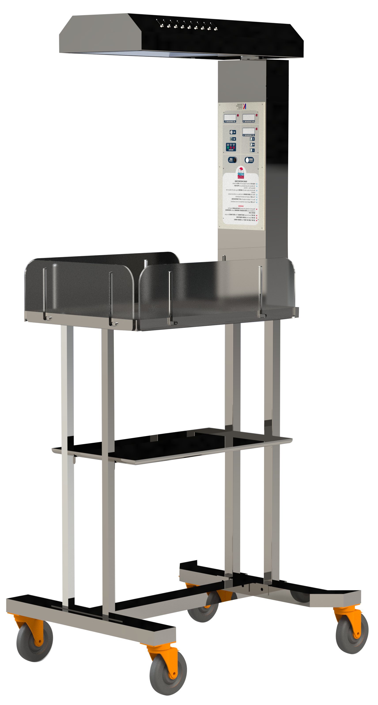
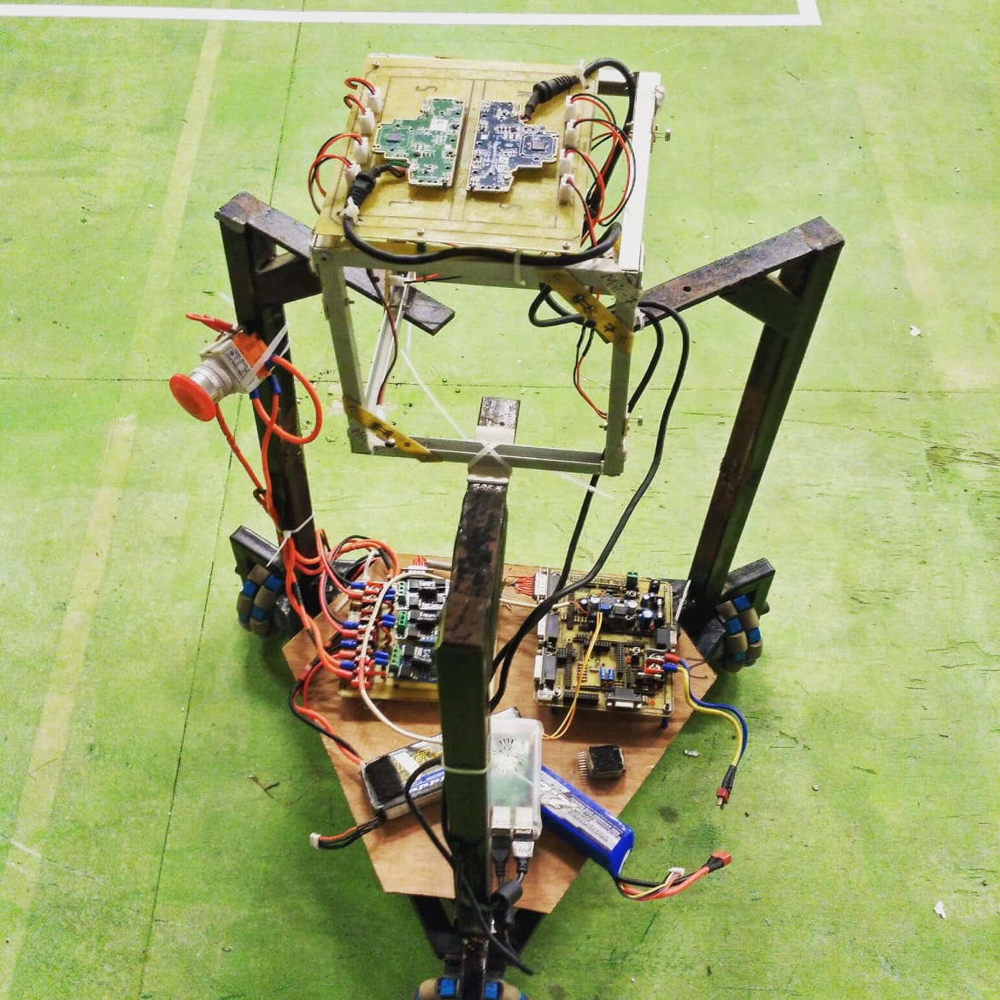
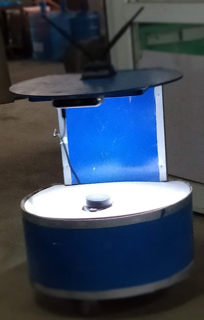

Selected projects in machine learning, data science, and mathematics.

Develop locally, an infant radiant warmer in Nepal with minimal design while integrating the most important features at a lowest cost. This is the first medical instrument designed and developed completely in Nepal. Continuously monitor and maintain temperature for infants with all necessary medical standards. PID Based controlled temperature regualtion is implemented.
View on GitHub →
Build a system for stationary sound source localization by cubical microphone array consisting eight microphones placed on four vertical adjacent faces which is mounted on the three wheel omni-directional drive.
View on GitHub →
ROS based autonomous service robot to give the services in the hotel, hospital wards, etc. which can navigate and plan path dynamically around mapped environments. Robot is tasted for both LIDAR based navigation and Visual Based navigation (RTAB) using camera. And performance using visual navigation was found to be more robust and efficient. AI features like face detection, face recognition, and object tracking were also implemented.
View on GitHub →Worked on research and development of mini drones for drone shows, where basically fleet of drones fly in different patterns with precision of nearly 40cm. Fabrication of airship drones which are used for air surveillance, monitoring system. Modified and tested ardupilot firmware for these drones. Worked on indoor autonomous navigation of drones using visual SLAM algorithm. A publication has been selected and published on Springer Nature.
View on GitHub →